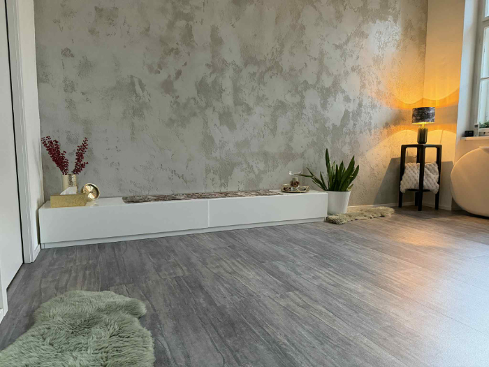
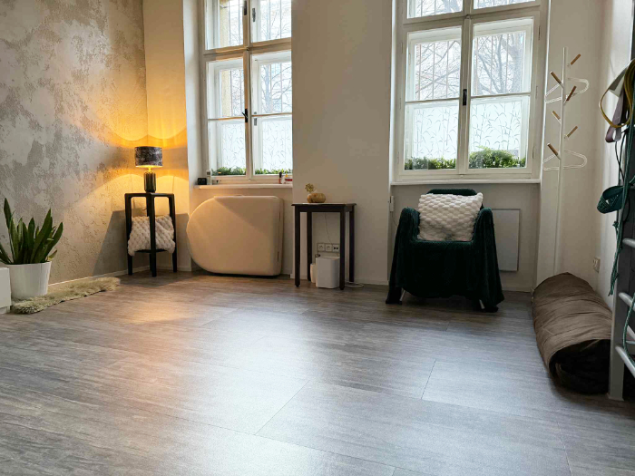

Nabízím širokou škálu masážních technik, které volím a kombinuji podle vašich potřeb. Ať už hledáte úlevu od bolestí zad, celkové uvolnění, nebo podporu imunity — společně najdeme přístup, který bude fungovat právě pro vás.
Speciální technika pro léčbu výhřezů plotének a skoliózu. Pomáhá však na jakékoliv bolesti zad a kloubů. Masáž kombinuje trakční (protahovací) tahy se současným promasírováním svalů.
Svaly se protáhnou a uvolní, klouby se rozhýbají a mozku se „připomene" jejich správné postavení. Při masáži pracuji i s trigger pointy a v případě potřeby používám mobilizační a manipulační techniky (HVLA).
Masáž reflexních zón nohou podle metody Jiřího Janči. Noha je „mikrosystémem" celého těla, kam se promítají nerovnováhy našich orgánů, nervů i pohybového aparátu.
Tlak na tyto zóny může být uklidňující nebo stimulační a zpětně působí na dané orgány. Podporuje přirozené samouzdravovací procesy těla.
Jemná masáž podkoží pro uvolnění lymfatických cest a uzlin. Lymfatický systém nemá vlastní pumpu a potřebuje pro své rozproudění pohyb, kterého máme obecně málo.
Zlepšuje imunitu a detoxikaci, odstraňuje otoky kotníků, slouží jako prevence otoků po operacích. Kosmetický efekt: vyhlazení vrásek a zmírnění pomerančové kůže.
„Milující ruce" - uvolnění nejen fyzických struktur, ale i harmonizace energie. Dlouhé tahy prováděné i předloktími připomínají vlny oceánu.
Skvěle napomáhá relaxaci hlubších vrstev svalů a fascií. Masáž se dělá intuitivně, protože každý řešíme různé bolesti a máme za sebou různé příběhy.
Japonská technika z Tradiční čínské medicíny. Masáž probíhá v oblečení na futonu. Kombinuje akupresuru dlaněmi s protažením ošetřované části těla.
Pracuje se s meridiány a body „tsubo" pro ovlivnění toku energie „ki". Zaměřuje se na uvolnění a mobilizaci kloubů. Po shiatsu se cítíte jako po skvělé lekci jógy.


Palackého třída 22
612 00 Brno - Královo pole